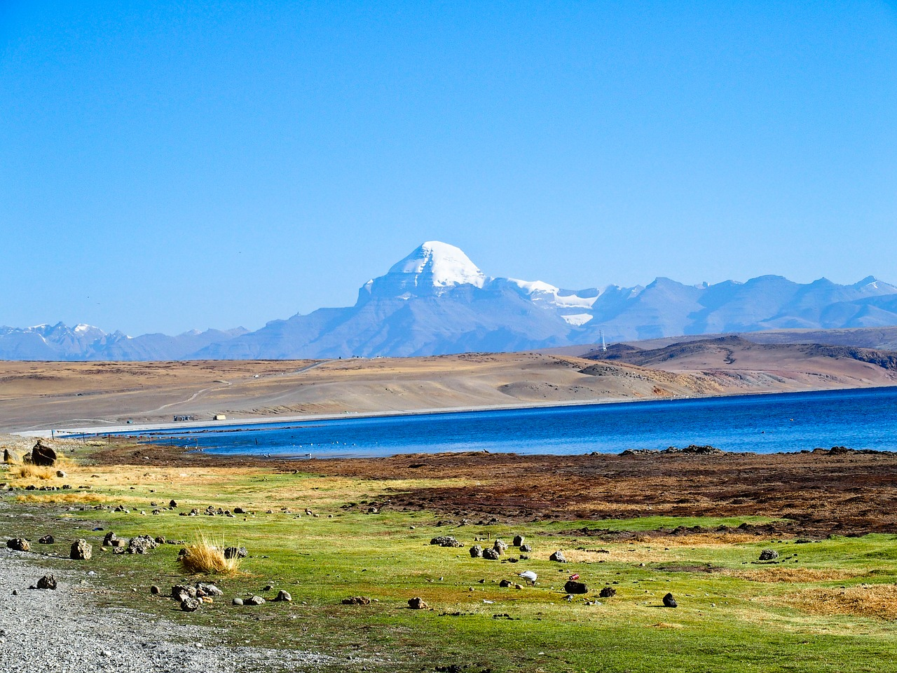

The region around Mount Kailash and the Indus headwaters area is typified by wide-scale faulting of metamorphosed late-Cretaceous to mid-Cenozoic sedimentary rocks which have been intruded by igneous Cenozoic granitic rocks. Mount Kailash appears to be a metasedimentary roof pendant supported by a massive granite base. The Cenozoic rocks represent offshore marine limestones deposited before subduction of the Tethys oceanic crust. These sediments were deposited on the southern margin of the Asia block during subduction of the Tethys oceanic crust before the collision between the Indian and Asian continents
